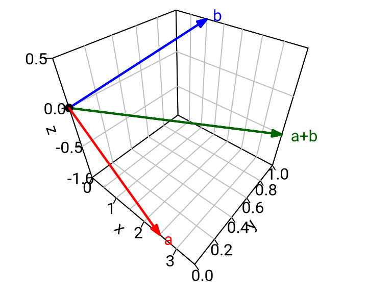
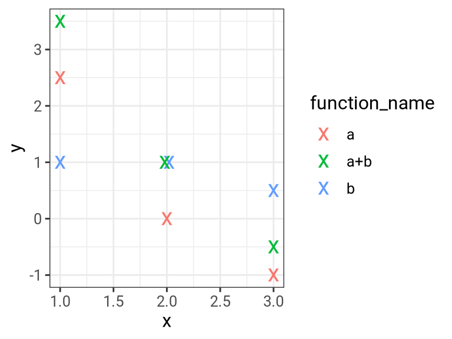

Chapter 2 Fields and Vector Spaces
2.1 Fields
Definition 2.1 A field is a set \(F\) together with binary operations on \(F\), which we will refer to as addition and multiplication, such that:
- \(F\) together with addition is an abelian group (we use the notation \(a+b\), \(0\) or \(0_F\), \(-a\)), and
- \(F^{\times} := F \setminus \{0\}\) together with multiplication is an abelian group (we use the notation \(a\cdot b\) or \(ab\), \(1\), \(a^{-1}\)),
Distributivity: For all \(a,b,c \in F\) we have \(a(b+c) = ab + ac\) in \(F\).
Example 2.2
The sets \(\mathbb{Q}, \mathbb{R}\) and \(\mathbb{C}\) with the usual addition and multiplication are fields (see also 1.2(b)).
The set \(\mathbb{Z}\) with the usual addition and multiplication is not a field because for instance there is no multiplicative inverse of 2 in \(\mathbb{Z}\).
The set \(\mathbb{F}_{2} := \{ 0, 1 \}\) together with the following operations is a field. \[ \begin{array}{c|cc} {+} & 0 & 1 \\ \hline 0 & 0 & 1 \\ 1 & 1 & 0 \end{array} \qquad \qquad \qquad \begin{array}{c|cc} \cdot & 0 & 1 \\ \hline 0 & 0 & 0 \\ 1 & 0 & 1 \end{array} \] Note that \(1 + 1 = 2\) in \(\mathbb{Q}\) but \(1 + 1 =0\) in \(\mathbb{F}_{2}\). \(\mathbb{F}_{2}\) is the smallest field.
Proof (that \(\mathbb{F}_2\) is a field):
\(\mathbb{F}_{2}\) with “\(+\)”, and \(\mathbb{F}_{2} \setminus \{ 0 \} = \{1\}\) with “\(\cdot\)”, are abelian groups (see 1.5(a)).
Distributivity: We need to check \(a(b+c) = ab + ac\) for all \(a, b, c \in \mathbb{F}_{2}\).
First case: \(a=0 \implies\) LHS \(=0\), RHS \(= 0+0 =0\).
Second case: \(a=1 \implies\) LHS \(= b+c =\) RHS. \(\square\)
- (without proof) Let \(p\) be a prime. The set \(\mathbb{F}_p\) \(:= \{ \overline{0}, \overline{1}, \dots , \overline{p-1} \}\) together with the addition defined in Example 1.5(b) and the following multiplication is a field: \[ \overline{x} \cdot \overline{y} := \overline{\text{remainder left when $xy$ is divided by $p$}}. \] (Why does this not work when \(p\) is not a prime, e.g. if \(p=4\)?)
Proposition 2.3 Let \(F\) be a field. Then:
- For all \(a\in F\) we have \(0a = 0\).
- For all \(a,b\in F\) we have \((-a)b = -(ab)\).
Proof.
(a) We have \(0 + 0a = 0a = (0 + 0)a = 0a + 0a\) (\(0\) is neutral for “\(+\)” and by distributivity)
\(\implies 0 = 0a\). (cancel \(0a\) on both sides using 1.4(a))
- We have \(ab + (-a)b = (a + (-a))b\) (by distributivity)
\(= 0b\) (by definition of the additive inverse)
\(= 0\) (by part (a))
\(\implies (-a)b\) is the additive inverse of \(ab\), i.e. \((-a)b = -(ab)\). \(\square\)
2.2 Vector spaces
Definition 2.4 Let \(F\) be a field. A vector space over \(F\) is an abelian group \(V\) (we will use “\(+\)” for the binary operation) together with a map \(F \times V \to V\) (called scalar multiplication and written as \((a,x) \mapsto ax\)), such that the following axioms are satisfied:
- \(1^{st}\) distributivity law: For all \(a,b \in F\) and \(x \in V\) we have \((a + b)x = ax + bx\) in \(V\).
- \(2^{nd}\) distributivity law: For all \(a,b \in F\) and \(x,y \in V\) we have \(a(x + y) = ax + ay\) in \(V\).
- For all \(a, b \in F\) and for all \(x \in V\) we have \((ab)x = a(bx)\) in \(V\).
- For all \(x \in V\) we have \(1x = x\) in \(V\).
The elements of \(V\) are called vectors. The elements of \(F\) will be referred to as scalars. We write \(0_F\) and \(0_{V}\) for the neutral elements of \(F\) and \(V\), respectively, and often just \(0\) for both (when it is clear from the context if it is a scalar or a vector). Furthermore we use the notation \(u-v\) for \(u + (-v)\) when \(u,v\) are both vectors, or both scalars.
Example 2.5
For every \(n \in \mathbb{N}\) the set \(\mathbb{R}^{n}\) together with the usual addition and scalar multiplication (as seen in Linear Algebra I) is a vector space over \(\mathbb{R}\). Similarly, for any field \(F\), the set \[ {\color{red}{F^n}} := \{ (a_{1}, \dots ,a_{n}) : \ a_{1}, \dots ,a_{n} \in F \} \] together with component-wise addition and the obvious scalar multiplication is a vector space over \(F\). For example \(\mathbb{F}_{2}^{2} = \{ (0,0),(0,1),(1,0),(1,1) \}\) is a vector space over \(\mathbb{F}_{2}\); \(F=F^{1}\) is a vector space over \(F\), and finally \(F^0:=\{ 0 \}\) is a vector space over \(F\).
Let \(V\) be the additive group of \(\mathbb{C}\). We view the usual multiplication \(\mathbb{R} \times V \to V, \ (a,x) \mapsto ax\), as scalar multiplication of \(\mathbb{R}\) on \(V\). Then \(V\) is a vector space over \(\mathbb{R}\). Similarly, we can think of \(\mathbb{C}\) or \(\mathbb{R}\) as vector spaces over \(\mathbb{Q}\).
Let \(V\) denote the abelian group \(\mathbb{R}\) (with the usual addition). For \(a \in \mathbb{R}\) and \(x \in V\) we put \(a \otimes x := a^{2}x \in V\); this defines a scalar multiplication \[ \mathbb{R} \times V \to V,\quad (a,x) \mapsto a \otimes x, \] of the field \(\mathbb{R}\) on \(V\). Which of the vector space axioms (see 2.4) hold for \(V\) with this scalar multiplication?
Solution:
We need to check whether \((a+b) \otimes x = a \otimes x + b \otimes x\) for all \(a,b \in \mathbb{R}\) and \(x \in V\).
LHS \(= (a+b)^{2} x\); RHS \(= a^{2}x + b^{2}x = (a^{2} + b^{2})x\)
\(\implies\) For \(a=1, b=1\) and \(x=1\) we have LHS \(\neq\) RHS.
\(\implies\) First distributivity law does not hold.We need to check whether \(a \otimes (x + y) = a \otimes x + a \otimes y\) for all \(a \in \mathbb{R}\) and \(x,y \in V\).
\(\left. \begin{aligned} \text{LHS} & = a^{2}(x+y) \\ \text{RHS} & = a^{2}x + a^{2}y = a^{2}(x+y) \end{aligned} \right\} \implies \text{LHS} = \text{RHS}\)
\(\implies\) Second distributivity law does hold.We need to check whether \(a \otimes (b \otimes x) = (ab) \otimes x\) for all \(a,b \in \mathbb{R}\) and \(x \in V\).
\(\left. \begin{aligned} \text{LHS} & = a \otimes (b^{2}x) = a^{2} (b^{2}x) \\ \text{RHS} & = (ab)^{2}x = (a^{2}b^{2})x = a^{2} (b^{2}x) \end{aligned} \right\} \implies \text{LHS} = \text{RHS}\)
\(\implies\) Axiom (iii) does hold.We have \(1 \otimes x = 1^{2} x = x\) for all \(x \in V\).
\(\implies\) Axiom (iv) does hold.
Proposition 2.6 Let \(V\) be a vector space over a field \(F\) and let \(a,b \in F\) and \(x,y \in V\). Then we have:
- \((a-b)x = ax - bx\)
- \(a(x-y) = ax - ay\)
- \(ax = 0_{V} \iff a = 0_{F}\) or \(x=0_{V}\)
- \((-1)x = -x\)
Proof:
(a) \((a-b)x + bx = ((a-b)+b)x\) (by first distributivity law)
\(= \left(a+((-b)+b)\right)x=(a+0_F)x = ax\) (using field axioms)
\(\implies (a-b)x = ax - bx\). (add \(-bx\) to both sides)
On Coursework.
“\(\Longrightarrow\)”: On Coursework.
“\(\Longleftarrow\)”: Put \(a=b\) and \(x=y\) in (a) and (b), respectively.Put \(a=0\) and \(b=1\) in (a) and use (c). \(\square\)
The next example is the “mother” of almost all vector spaces. It vastly generalises the fourth of the following five ways of representing vectors and vector addition in \(\mathbb{R}^{3}\).

\({\color{red}{\underline{a} = (2.5,0,-1)}} \qquad {\color{blue}{\underline{b} = (1,1,0.5)}} \qquad {\color{green}{\underline{a}+\underline{b} = (3.5,1,-0.5)}}\)
\({\color{red}{\underline{a} = \begin{pmatrix} 1 & 2 & 3 \\ 2.5 & 0 & -1 \end{pmatrix}}} \qquad {\color{blue}{\underline{b} = \begin{pmatrix} 1 & 2 & 3 \\ 1 & 1 & 0.5 \end{pmatrix}}} \qquad {\color{green}{\underline{a}+\underline{b} = \begin{pmatrix} 1 & 2 & 3 \\ 3.5 & 1 & -0.5 \end{pmatrix}}}\)
\(\begin{aligned} {\color{red}{\underline{a}: \{ 1,2,3}} & {\color{red}{\} \to \mathbb{R}}} & \quad {\color{blue}{\underline{b}: \{ 1,2,3}} & {\color{blue}{\} \to \mathbb{R}}} & \quad {\color{green}{\underline{a}+\underline{b}: \{ 1,2,3}} & {\color{green}{\} \to \mathbb{R}}} \\ & {\color{red}{1 \mapsto 2.5}} & & {\color{blue}{1 \mapsto 1}} & & {\color{green}{1 \mapsto 3.5}} \\ & {\color{red}{2 \mapsto 0}} & & {\color{blue}{2 \mapsto 1}} & & {\color{green}{2 \mapsto 1}} \\ & {\color{red}{3 \mapsto -1}} & & {\color{blue}{3 \mapsto 0.5}} & & {\color{green}{3 \mapsto -0.5}} \end{aligned}\)

Example 2.7 Let \(S\) be any set and let \(F\) be a field. Let \[ {\color{red}{F^S}} := \{ f: S \to F \} \] denote the set of all maps from \(S\) to \(F\). We define an addition on \(F^{S}\) and a scalar multiplication of \(F\) on \(F^{S}\) as follows: When \(f,g \in F^{S}\) and \(a \in F\) we set: \[ \begin{aligned} ({\color{red}{f+g}})(s) & := f(s) + g(s) \qquad & \text{for any } s \in S \\ ({\color{red}{af}})(s) & := af(s) & \text{for any } s \in S. \end{aligned} \] Then \(F^{S}\) is a vector space over \(F\) (see below for the proof).
Special Cases:
Let \(S = \{1,\dots,n\}\). Identifying any map \(f: \{1,\dots,n\} \to F\) with the corresponding tuple \((f(1),\dots,f(n))\), we see that \(F^{S}\) can be identified with the set \(F^{n}\) of all \(n\)-tuples \((a_{1},\dots,a_{n})\) considered in Example 2.5(a).
Let \(S = \{1,\dots,n\} \times \{1,\dots,m\}\). Identifying any map \(f: \{1,\dots,n\} \times \{1,\dots,m\} \to F\) with the corresponding matrix: \[ \begin{pmatrix} f((1,1)) & \dots & f((1,m)) \\ \vdots & & \vdots \\ f((n,1)) & \dots & f((n,m)) \end{pmatrix} \] we see that \(F^{S}\) can be identified with the set \(M_{n \times m}(F)\) of \((n \times m)\)-matrices \[ \begin{pmatrix} a_{11} & \dots & a_{1m} \\ \vdots & \ddots & \vdots \\ a_{n1} & \dots & a_{nm} \end{pmatrix} \] with entries in \(F\). In particular \(M_{n \times m}(F)\) is a vector space over \(F\).
Let \(S = \mathbb{N}\). Identifying any map \(f: \mathbb{N} \to F\) with the sequence \((f(1), f(2), f(3), \dots)\) we see that \(F^{\mathbb{N}}\) can be identified with the set of all infinite sequences \((a_{1},a_{2},a_{3}, \dots)\) in \(F\).
Let \(F=\mathbb{R}\) and let \(S\) be an interval \(I\) in \(\mathbb{R}\). Then \(F^{S}=\mathbb{R}^I\) is the set of all functions \(f: I \to \mathbb{R}\). (We can visualise these functions via their graph, similarly as in (V) above.)
Proof (that \(F^S\) is a vector space over \(F\)): First, \(F^S\) with the above defined “\(+\)” is an abelian group:
Associativity: Let \(f,g,h \in F^{S}\).
We need to show: \((f+g)+h = f+(g+h) \text{ in } F^{S}\)
\(\iff ((f+g)+h)(s) = (f+(g+h))(s) \qquad\) for all \(s \in S\).
\(\left. \begin{aligned} \text{LHS} = (f+g)(s) + h(s) & = (f(s) + g(s)) + h(s) \\ \text{RHS} = f(s) + (g+h)(s) & = f(s) +(g(s) + h(s) \end{aligned} \right\}\) (by definition of addition in \(F^{S}\))
\(\implies\) LHS = RHS (by associativity in \(F\))
Identity element: Let \(\underline{0}\) denote the constant function \(S \to F, s \mapsto 0_{F}\).
For any \(f \in F^{S}\) and \(s\in S\) we have \((f + \underline{0})(s) = f(s) + \underline{0}(s) = f(s) + 0_{F} = f(s)\), hence \(f + \underline{0} = f\).
Similarly we have \(\underline{0} + f = f\). (using definitions of \(\underline{0}\) and “\(+\)”, and field axioms)
\(\implies \underline{0}\) is the identity element.
Inverses: Let \(f \in F^{S}\). Define \((-f)(s) := -f(s)\).
For any \(s\in S\) we have \((f+(-f))(s) = f(s) + (-f)(s) = f(s) + (-f(s)) = 0_F = \underline{0}(s)\).
\(\implies f + (-f) = \underline{0}\) in \(F^{S}\), so \(-f\) is the inverse to \(f\). (\(\uparrow\) defns of “\(+\)”, “\(-f\)”, \(\underline{0}\), and field axioms)
Commutativity: Let \(f,g\in F^S\).
For any \(s\in S\) we have \((f+g)(s)=f(s)+g(s) = g(s) + f(s) = (g+f)(s)\).
\(\implies f+g=g+f\). (\(\uparrow\) by the definition of “\(+\)”, and commutativity of \(+\) in \(F\))
Now the four axioms from Definition 2.4 (only (i) and (iii) spelled out here, the others are similar):
First distributivity law: Let \(a,b \in F\) and \(f \in F^{S}\). We want to check that \((a+b)f = af + bf\):
For all \(s \in S\) we have
\(((a+b)f)(s) = (a+b)(f(s))\) (by definition of the scalar multiplication)
\(= a(f(s)) + b(f(s))\) (by distributivity in \(F\))
\(= (af)(s) + (bf)(s)\) (by definition of the scalar multiplication)
\(= (af + bf)(s)\) (by definition of addition in \(F^{S}\))
\(\implies (a+b)f = af + bf\).
Axiom (iii): Let \(a,b\in F\) and \(f\in F^S\). We want to check that \((ab)f = a(bf)\).
For all \(s\in S\) we have
\(((ab)f)(s) = (ab)(f(s))\) (by definition of scalar multiplication in \(F^S\))
\(=a(b(f(s)))\) (by associativity of multiplication in \(F\))
\(=a((bf)(s))\) (by definition of scalar multiplication in \(F^S\))
\(=(a(bf))(s)\) (by definition of scalar multiplication in \(F^S\))
\(\implies\) \((ab)f = a(bf)\). \(\square\)
2.3 Subspaces
Definition 2.8 Let \(V\) be a vector space over a field \(F\). A subset \(W\) of \(V\) is called a subspace of \(V\) if the following conditions hold:
- \(0_{V} \in W\).
- “\(W\) is closed under addition”: for all \(x,y \in W\) we also have \(x+y \in W\).
- “\(W\) is closed under scalar multiplication”: for all \(a \in F\) and \(x \in W\) we have \(ax \in W\).
Note that condition (b) states that the restriction of the addition in \(V\) to \(W\) gives a binary operation \(W \times W \to W\) on \(W\) (addition in \(W\)). Similarly, condition (c) states that the scalar multiplication of \(F\) on \(V\) yields a map \(F \times W \to W\) which we view as a scalar multiplication of \(F\) on \(W\).
Proposition 2.9 Let \(V\) be a vector space over a field \(F\) and let \(W\) be a subspace of \(V\). Then \(W\) together with the above mentioned addition and scalar multiplication is a vector space over \(F\).
Proof: The following axioms hold for \(W\) because they already hold for \(V\):
- associativity of addition;
- commutativity of addition;
- all the four axioms in Definition 2.4.
There exists an additive identity element in \(W\) by condition 2.8(a) (i.e. \(0_W:=0_V\in W\)).
It remains to show that additive inverses exist:
Let \(x \in W\). Then \(-x = (-1)x\) (see 2.6(d)) is in \(W\) by condition 2.8(c);
and \(-x\) satisfies \(x+(-x) = 0_W=0_V\) because it does so in \(V\).
\(\square\)
Example 2.10
Examples of subspaces of \(\mathbb{R}^{n}\) as seen in Linear Algebra I, such as the nullspace of any real \((n \times m)\)-matrix, or the column space of any real \((m\times n)\)-matrix.
The set of convergent sequences is a subspace of the vector space \(\mathbb{R}^{\mathbb{N}}\) of all sequences \((a_{1},a_{2},a_{3}, \dots)\) in \(\mathbb{R}\). A subspace of this subspace (and hence of \(\mathbb{R}^{\mathbb{N}}\)) is the set of all sequences in \(\mathbb{R}\) that converge to \(0\). (See Calculus I for proofs).
Let \(A \in M_{l \times m}(\mathbb{R})\). Then \(W := \{B \in M_{m \times n}(\mathbb{R}) \mid AB = \underline{0} \}\) is a subspace of \(M_{m \times n}(\mathbb{R})\).
Proof:- We have \(A \cdot \underline{0} = \underline{0} \implies \underline{0} \in W\).
- Let \(B_{1},B_{2} \in W\)
\(\implies A(B_{1} + B_{2}) = AB_{1} + AB_{2} = \underline{0} + \underline{0} = \underline{0}\)
\(\implies B_{1} + B_{2} \in W\). - Let \(a \in \mathbb{R}\) and \(B \in W\)
\(\implies A(aB) = a(AB) = a \underline{0} = \underline{0}\)
\(\implies aB \in W\). \(\square\)
Let \(I\) be a non-empty interval in \(\mathbb{R}\). The following subsets of the vector space \(\mathbb{R}^{I}\) consisting of all functions from \(I\) to \(\mathbb{R}\) are subspaces:
- For any \(s_{0} \in I\) the subset \(W := \{ f \in \mathbb{R}^{I} : f(s_{0})=0 \}\) of \(\mathbb{R}^{I}\).
Proof:- The zero function \(\underline{0}\) vanishes at \(s_{0} \implies \underline{0} \in W\).
- Let \(f,g \in W\)
\(\implies (f+g)(s_{0}) = f(s_{0}) + g(s_{0}) = 0 + 0 = 0\)
\(\implies f+g \in W\). - Let \(a \in \mathbb{R}\) and \(f \in W\)
\(\implies (af)(s_{0}) = a\cdot f(s_{0}) = a\cdot 0 = 0\)
\(\implies af \in W\). \(\square\)
- The set of all continuous functions \(f: I \to \mathbb{R}\) (see Calculus I).
- The set of all differentiable functions \(f: I \to \mathbb{R}\) (see Calculus I).
- For any \(n \in \mathbb{N}\), the set \(\mathbb{P}_n\) of polynomial functions \(f: I \to \mathbb{R}\) of degree at most \(n\), is a subspace by 3.2(c) and 3.3. A function \(f: I \to \mathbb{R}\) is a polynomial function of degree at most \(n\) if there exists \(a_{0}, \dots ,a_{n} \in \mathbb{R}\) such that: \[ f(s) = a_{0} + a_{1}s + \dots + a_{n}s^{n} \text{ for all } s \in I. \] Denoting the function \(I \to \mathbb{R}, s \mapsto s^{m}\), by \(t^m\), this means that \(f = a_{0}t^0 + a_{1}t^1 + \dots + a_{n}t^{n}\) as elements of the vector space \(\mathbb{R}^{I}\). (We will also use the more natural notation \(1\) for \(t^0\), and \(t\) for \(t^1\).)
- The space of solutions of a homogeneous linear differential equation (without further explanation); e.g.: \[ \mathbb{P}_{n} = \{ f \in \mathbb{R}^{I} : f \text{ is differentiable } (n+1) \text{ times and } f^{(n+1)} = \underline{0} \} \]
- For any \(s_{0} \in I\) the subset \(W := \{ f \in \mathbb{R}^{I} : f(s_{0})=0 \}\) of \(\mathbb{R}^{I}\).
The subset \(\mathbb{Z}^{n}\) of the vector space \(\mathbb{R}^{n}\) over \(\mathbb{R}\) is closed under addition but not closed under scalar multiplication: For instance, \((1,0, \dots ,0) \in \mathbb{Z}^{n}\) and \(\frac{1}{2} \in \mathbb{R}\), but \(\frac{1}{2}(1,0, \dots ,0) \notin \mathbb{Z}^{n}\).
The subsets \(W_{1} := \{ (a,0) : a \in \mathbb{R} \}\) and \(W_{2} := \{ (0,b) : b \in \mathbb{R} \}\) are subspaces of \(\mathbb{R}^{2}\). The subset \(W := W_{1} \cup W_{2}\) of the vector space \(\mathbb{R}^{2}\) is closed under scalar multiplication but not under addition because, for instance, \((1,0)\) and \((0,1)\) are in \(W\) but \((1,0) + (0,1) = (1,1) \notin W\).
Proposition 2.11 Let \(W_{1},W_{2}\) be subspaces of a vector space \(V\) over a field \(F\). Then the intersection \(W_{1} \cap W_{2}\) and the sum of subspaces \[ {\color{red}{W_{1} + W_{2}}} := \{ x_{1} + x_{2}\in V \mid x_{1} \in W_{1}, \ x_{2} \in W_{2} \} \] are subspaces of \(V\) as well.
Proof: For \(W_{1} \cap W_{2}\):
- We have \(0_V\in W_1\) and \(0_V\in W_2\) (because \(W_1\) and \(W_2\) are subspaces)
\(\implies\) \(0_V\in W_1\cap W_2\). (by definition of intersection) - Let \(x,y\in W_1\cap W_2\)
\(\implies\) \(x,y \in W_1\) and \(x,y\in W_2\) (by definition of intersection)
\(\implies\) \(x+y\in W_1\) and \(x+y\in W_2\) (because \(W_1\) and \(W_2\) are subspaces)
\(\implies\) \(x+y\in W_1\cap W_2\). (by definition of intersection) - Let \(a\in F\) and \(x\in W_1\cap W_2\)
\(\implies\) \(x \in W_1\) and \(x\in W_2\) (by definition of intersection)
\(\implies\) \(ax\in W_1\) and \(ax\in W_2\) (because \(W_1\) and \(W_2\) are subspaces)
\(\implies\) \(ax\in W_1\cap W_2\). (by definition of intersection)
For \(W_{1} + W_{2}\):
- We have \(0_{V} = 0_{V} + 0_{V} \in W_{1} + W_{2}\).
- Let \(x,y \in W_{1} + W_{2}\)
\(\implies \exists x_{1},y_{1} \in W_{1}\) and \(\exists x_{2},y_{2} \in W_{2}\) with \(x=x_{1}+x_{2}\), \(y=y_{1}+y_{2}\) (by definition of \(W_1+W_2\))
\(\implies x + y = (x_{1}+x_{2}) + (y_{1}+y_{2}) =\)
\(=(x_{1}+y_{1}) + (x_{2}+y_{2}) \in W_{1} + W_{2}\). (because \(W_{1}\) and \(W_{2}\) are subspaces) - Let \(a \in F\) and \(x \in W_{1} + W_{2}\)
\(\implies \exists x_{1} \in W_{1}\), \(x_{2} \in W_{2}\) such that \(x=x_{1}+x_{2}\) (by definition of \(W_1+W_2\))
\(\implies ax = a (x_{1}+x_{2}) = ax_{1} + ax_{2} \in W_{1} + W_{2}\). (because \(W_{1}\) and \(W_{2}\) are subspaces)\(\square\)
Example 2.12 Let \(W_{1}\) and \(W_{2}\) be as in 2.10(f). Then \(W_{1} + W_{2} = \mathbb{R}^{2}\).